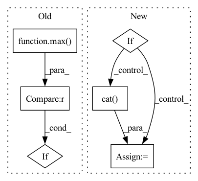

Pattern ID :36988

Before Change
a = nn.Softmax()(outs)
for ii in range(len(outs)):
total += 1
if outs[ii].tolist().index(max(outs[ii])) == y_batch[ii]:
correct += 1
pts.append([a[ii][1], y_batch[ii]])
print((float(correct)/total))
After Change
elif task == "multilabel":
pred.append(torch.sigmoid(outs).round())
true.append(j[-1])
if pred:
pred = torch.cat(pred, 0).cpu().numpy()
true = torch.cat(true, 0).cpu().numpy()
if auprc:
print(AUPRC(pts))
In pattern: SUPERPATTERN
Frequency: 3
Non-data size: 6
Instances
Fragment ID: 105244581
Project Name: pliang279/multibench
Commit Name: e8df377596458671f3a074b2f5d41a118b3fe6ae
Time: 2021-06-06
Author: ztwu_nil@zju.edu.cn
File Name: training_structures/MFM.py
M Class Name: AnonimousClass
N Class Name: AnonimousClass
M Method Name: test_MFM(4)
N Method Name: test_MFM(3)
M Parent Class:
N Parent Class:
M File Name: training_structures/MFM.py
N File Name: training_structures/MFM.py
M Start Line: 85
M End Line: 103
N Start Line: 115
N End Line: 144
'>
Before Change
a = nn.Softmax()(outs)
for ii in range(len(outs)):
total += 1
if outs[ii].tolist().index(max(outs[ii])) == y_batch[ii]:
correct += 1
pts.append([a[ii][1], y_batch[ii]])
print((float(correct)/total))
After Change
elif task == "multilabel":
pred.append(torch.sigmoid(outs).round())
true.append(j[-1])
if pred:
pred = torch.cat(pred, 0).cpu().numpy()
true = torch.cat(true, 0).cpu().numpy()
if auprc:
print(AUPRC(pts))
'>
Fragment ID: 105244580
Project Name: pliang279/multibench
Commit Name: 08e57215227c5575c74f7942e287340eb5e50eb7
Time: 2021-06-06
Author: ztwu_nil@zju.edu.cn
File Name: training_structures/MFM.py
M Class Name: AnonimousClass
N Class Name: AnonimousClass
M Method Name: test_MFM(4)
N Method Name: test_MFM(3)
M Parent Class:
N Parent Class:
M File Name: training_structures/MFM.py
N File Name: training_structures/MFM.py
M Start Line: 85
M End Line: 103
N Start Line: 115
N End Line: 144
'>
Before Change
model.eval()
input_size = _get_input_size(model=model, target=TARGET_FWD_SIZE)
if max(input_size) > MAX_FWD_SIZE:
pytest.skip("Fixed input size model > limit.")
train_nodes, eval_nodes = get_graph_node_names(
After Change
model = torch.jit.script(_create_fx_model(model))
outputs = tuple(model(torch.randn((batch_size, *input_size))).values())
if isinstance(outputs, tuple):
outputs = torch.cat(outputs)
assert outputs.shape[0] == batch_size
assert not torch.isnan(outputs).any(), "Output included NaNs"
'>
Fragment ID: 105244579
Project Name: feng-lab/pytorch-image-models
Commit Name: 9b3519545d6bf901047dccd24832793c95919cd4
Time: 2021-11-19
Author: rwightman@gmail.com
File Name: tests/test_models.py
M Class Name: AnonimousClass
N Class Name: AnonimousClass
M Method Name: test_model_forward_fx_torchscript(2)
N Method Name: test_model_forward_fx_torchscript(2)
M Parent Class:
N Parent Class:
M File Name: tests/test_models.py
N File Name: tests/test_models.py
M Start Line: 433
M End Line: 444
N Start Line: 424
N End Line: 429